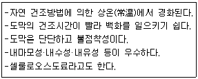
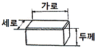
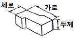
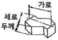
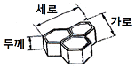
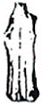
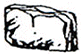
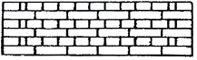

조경기능사 (2007-09-16 기출문제)
1과목: 조경일반
1. 설계자의 의도를 개략적인 형태로 나타낸 일종의 시각 언어로서 도면을 단순화시켜, 상징적으로 표현한 그림을 의미하는 것은?
- 상세도
- 다이어그램
- 조감도
- 평면도
(정답률: 80%)

2. 현행 주차장법 시행규칙에 의한 옥외주차장의 주차 대수 1대에 해당하는 주차단위구획으로 옳은 것은?
- 2.0m × 4.5m 이상
- 3.0m × 5.0m 이상
- 2.3m × 4.5m 이상
- 2.3m × 5.0m 이상
(정답률: 68%)
3. 다음 정원에서의 눈가림 수법에 대한 설명으로 틀린 것은?
- 좁은 정원에서는 눈가림 수법을 쓰지 않는 것이 정원을 더 넓어 보이게 한다.
- 눈가림은 변화와 거리감을 강조하는 수법이다.
- 이 수법은 원래 동양적인 것이다.
- 정원이 한층 더 깊이가 있어 보이게 하는 수법이다.
(정답률: 72%)
4. 청나라의 건륭제가 조영하였으며, 만수산과 곤명호로 구성되어 있는 정원은?
- 서호
- 졸정원
- 원명호
- 이화원
(정답률: 65%)
5. 마스터플랜(master plan)의 작성이 위주가 되는 과정은?
- 기본계획
- 기본설계
- 실시설계
- 상세설계
(정답률: 82%)
6. 다음 중 여러 단을 만들어 그 곳에 물을 흘러 내리게 하는 이탈리아 정원에서 많이 사용되었던 조경기법은?
- 캐스케이드
- 토피어리
- 록 가든
- 캐널
(정답률: 87%)
7. 다음 중 일반적인 학교정원의 공간별 설계방법으로 가장 거리가 먼 것은?
- 알뜰구역에는 잔디밭이나 화단, 분수, 조각물, 휴게 시설 등을 설치한다.
- 가운데 뜰 구역은 면적이 좁은 경우가 많으므로 상록성 교목류의 사용을 권장한다.
- 뒤뜰 면적이 좁은 경우에는 음지식물 학습원을 만들 수 있다.
- 운동장과 교실 건물 사이는 5~10m의 녹지대를 설치하여 소음과 먼지 등을 차단 시킨다.
(정답률: 73%)
8. 다음 중 고대 로마의 폼페이 주택 정원에서 볼 수 없는 것은?
- 아트리움
- 페리스틸리움
- 포름
- 지스터스
(정답률: 82%)
9. 다음 조경의 대상 중 자연적 환경요소가 가장 빈약한 곳은?
- 도시조경
- 명승지, 천연기념물
- 도립공원
- 국립공원
(정답률: 90%)
10. 다음 중 서양의 정형식 정원양식과 가장 거리가 먼 것은?
- 기하학적인 땅 가름
- 다듬어진 나무
- 인공적인 무늬화단
- 비대칭적이면서 균형과 조화유지
(정답률: 67%)
11. 색광의 3원색인 R, G, B를 모두 혼합하면 어떤 색이 되는가?
- 검은색
- 회색
- 흰색
- 붉은색
(정답률: 77%)
12. 중국 정원은 풍경식이면서 어디에 중점을 두고 조성되었는가?
- 대비
- 조화
- 관련
- 연관
(정답률: 90%)
13. 다음 중 중국의 신선사상에서 유래 된 십장생(十長生) 중의 하나가 아닌 것은?
- 구름
- 돌
- 학
- 용
(정답률: 66%)
14. 디자인의 조건이 아닌 것은?
- 심미성
- 독창성
- 합목적성
- 조직성
(정답률: 70%)
15. 조경의 개념과 거리가 먼 것은?
- 건축, 토목의 일부이며, 이들과 조형미를 이루게 한다.
- 국토를 보존하고 정비하며, 그 이용에 관한 계획을 하는 것이다.
- 과학적이고 미적인 공간을 창조하는 종합예술이다.
- 아름답고 편리하며 생산적인 생활 환경을 조성한다.
(정답률: 50%)
2과목: 조경재료
16. 가을에 단풍이 노란색으로 물드는 수종은?
- 붉나무
- 붉은고로쇠나무
- 담쟁이덩굴
- 화살나무
(정답률: 79%)
17. 다음 보기가 설명하는 것은?

- 래커
- 에폭시 수지
- 페놀 수지
- 아미노 알키드 수지
(정답률: 67%)
18. 다음 중 봄철에 꽃을 가장 빨리 보려면 어떤 수종을 식재해야 하는가?
- 말발도리
- 자귀나무
- 매화나무
- 배롱나무
(정답률: 87%)
19. 다음 중 소형고압블록의 종류 중 S블록을 가장 적당한 것은?




(정답률: 91%)
20. 산울타리를 조성할 때 맹아력이 가장 강한 수종은?
- 녹나무
- 이팝나무
- 소나무
- 개나리
(정답률: 84%)
21. 봄 화단용 꽃으로만 짝지어진 것은?
- 팬지, 국화
- 데이지, 금잔화
- 샐비에, 색비름
- 칸나, 메리골드
(정답률: 71%)
22. 다음 중 줄기가 아래로 늘어지는 생김새의 수간을 가진 나무의 모양을 무엇이라 하는가?
- 쌍간
- 다간
- 직간
- 현애
(정답률: 89%)
23. 다음 식물 중 활엽수가 아닌 것은?
- 은행나무
- 구실잣밤나무
- 가시나무
- 수수꽃다리
(정답률: 78%)
24. 조경수목의 하자로 판단되는 기준은?
- 수관부의 가지가 약 1/2 이상 고사시
- 수관부의 가지가 약 2/3 이상 고사시
- 수관부의 가지가 약 3/4 이상 고사시
- 수관부의 가지가 약 3/5 이상 고사시
(정답률: 87%)
25. 그 해 자란 가지에서 꽃눈이 분화하여 당년에 꽃이 피는 나무가 아닌 것은?
- 무궁화
- 철쭉
- 능소화
- 배롱나무
(정답률: 59%)
26. 화성암의 일종으로 돌 색깔은 흰색 또는 담회색으로 주로 경관석, 바닥포장용, 석탑, 석등, 묘석 등으로 사용되는 것은?
- 석회암
- 점판암
- 응회암
- 화강암
(정답률: 84%)
27. 다음 중 척박지에서도 잘 자라는 수종은?
- 가시나무
- 졸참나무
- 팽나무
- 피나무
(정답률: 57%)
28. 막구조에 대한 내용 중 틀린 것은?
- 막 면의 겹에 따라 1중막, 2중막으로 나누어진다.
- 자체 투광성이 있어 낮에는 인공조명이 필요 없다.
- 파골라, 쉘터, 자전거보관대 등 조경분야에서 이용한다.
- 현대 막구조는 미국에서 창안되고 개선되었다.
(정답률: 56%)
29. 다음 수종 중 양수에 속하는 것은?
- 가중나무
- 주목
- 팔손이나무
- 녹나무
(정답률: 64%)
30. 석재 중에서 가장 고급품으로 주로 미관을 요구하는 돌쌓기 등에 쓰이는 것은?
- 마름돌
- 견치돌
- 깬돌
- 호박돌
(정답률: 64%)
31. 수목식재 후 지주목 설치시에 필요한 완충재료로서 작업능률이 뛰어나고 통기성과 내구성이 뛰어난 환경 친화적인 재료는?
- 새끼
- 고무판
- 보온덮개
- 녹화테이프
(정답률: 83%)
32. 석재의 가공 방법 중 혹두기한 면을 다시 비교적 고르고 곱게 다듬는 혹두기 작업 바로 다음의 후속 작업은?
- 물갈기
- 잔다듬
- 정다듬
- 도드락다듬
(정답률: 81%)
33. 석재 중 석회암이 변질한 것으로 무늬가 화려하고 아름다우며 석질이 치밀하고, 비교적 가공하기 쉬우나 산과 열에 약한 것은?
- 화강암
- 안산암
- 대리석
- 점판암
(정답률: 73%)
34. 가로수가 갖추어야 할 조건이 아닌 것은?
- 공해에 강한 수목
- 답압에 강한 수목
- 지하고가 낮은 수목
- 이식에 잘 적응하는 수목
(정답률: 90%)
35. 다음 그림의 돌 모양들 중‘입석’을 나타낸 것은?


(정답률: 92%)
3과목: 조경 시공 및 관리
36. 토공작업시 지반면보다 낮은 면의 굴착에 사용하는 기계로 깊이 6m 정도의 굴착에 적당하며, 백호우(back hoe)라고도 불리는 기계는?
- 클램 쉘
- 드랙 라인
- 파워 쇼벨
- 드랙 쇼벨
(정답률: 58%)
37. 다음 중 수목을 기하학적인 모양으로 수관을 다듬어 만든 수형을 가리키는 것은?
- 정형수
- 형상수
- 경관수
- 녹음수
(정답률: 87%)
38. 다음 수목의 전정에 관한 설명 중 틀린 것은?
- 가로수의 밑가지는 2m 이상 되는 곳에서 나오도록 한다.
- 이식 후 활착을 위한 전정은 본래의 수형이 파괴되지 않도록 한다.
- 춘계전정(4 ~ 5월)시 진달래, 목련 등의 화목류는 개화가 끝난 후에 하는 것이 좋다.
- 하계전정(6 ~ 8월)은 수목의 생장이 왕성한 때이므로 강전정을 해도 나무가 상하지 않아서 좋다.
(정답률: 84%)
39. 다음 그림과 같이 쌓는 벽돌 쌓기의 방법은?

- 영국식쌓기
- 프랑스식쌓기
- 영롱쌓기
- 미국식쌓기
(정답률: 76%)
40. 수목 줄기의 썩은 부분을 도려내고 구멍에 충진 수술을 하고자 할 때 가장 효과적인 시기는?
- 1월 ~ 3월
- 4월 ~ 6월
- 10월 ~ 12월
- 아무 시기나 상관없다.
(정답률: 76%)
41. 다음 중 소나무의 순자르기 방법으로 가장 거리가 먼 것은?
- 수세가 좋거나 어린나무는 다소 빨리 실시하고, 노목이나 약해 보이는 나무는 5 ~ 7일 늦게 한다.
- 손으로 순을 따 주는 것이 좋다.
- 5 ~ 6월경에 새순이 5 ~ 10cm 길이로 자랐을 때 실시한다.
- 자라는 힘이 지나치다고 생각될 때에는 1/3 ~ 1/2 정도 남겨두고 끝 부분을 따 버린다.
(정답률: 82%)
42. 벽돌의 크기는 190mm × 90mm × 57mm 이다. 벽돌 줄눈의 두께를 10mm로 할 때, 표준형 시멘트 벽돌벽 1.5B의 두께로 가장 적합한 것은?
- 170mm
- 270mm
- 290mm
- 330mm
(정답률: 82%)
43. 난지형 잔디에 뗏밥을 주는 가장 적합한 시기는?
- 3 ~ 4 월
- 6 ~ 8 월
- 9 ~ 10 월
- 11 ~ 1 월
(정답률: 82%)
44. 다음 공사의 작업 중 마지막으로 행하는 것은?
- 식재공사
- 급∙E배수 및 호안공
- 터닦기
- 콘크리트공사
(정답률: 88%)
45. 일반적으로 빗자루병이 가장 발생하기 쉬운 수종은?
- 향나무
- 동백나무
- 대추나무
- 장미
(정답률: 87%)
46. 조경공사의 암석운반용으로 많이 쓰이는 것은?
- 형강
- 와이어로프
- 철선
- 볼트∙;너트
(정답률: 90%)
47. 계단공사에서 발판 높이를 20cm로 했을 때 발판폭으로 가장 알맞은 것은?
- 10 ~ 15cm
- 20 ~ 25cm
- 30 ~ 35cm
- 40 ~ 45cm
(정답률: 58%)
48. 다음 중 큰 나무의 뿌리돌림에 대한 설명으로 가장 거리가 먼 것은?
- 굵은 뿌리를 3 ~ 4 개 정도 남겨둔다.
- 굵은 뿌리 절단시는 톱으로 깨끗이 절단한다.
- 뿌리 돌림을 한 후에 새끼로 뿌리분을 감아두면 뿌리의 부패를 촉진하여 좋지 않다.
- 뿌리 돌림을 하기 전 수목이 흔들리지 않도록 지주목을 설치하여 작업하는 방법도 좋다.
(정답률: 86%)
49. 상록수를 옮겨심기 위하여 나무를 캐 올릴 때 뿌리분의 지름은?
- 근원직경의 1/2배
- 근원직경의 1배
- 근원직경의 4배
- 근원직경의 6배
(정답률: 88%)
50. 침엽수류와 상록활엽수류의 가장 일반적인 이식 적기는?
- 이른 봄과 장마철
- 초여름
- 늦은 여름
- 겨울철 엄동기
(정답률: 80%)
51. 원로의 디딤돌 놓기에 관한 설명으로 틀린 것은?
- 디딤돌은 보행을 위하여 공원이나 정원에서 잔디밭, 자갈 위에 설치하는 것이다.
- 디딤돌은 주로 화강암을 넓적하고 편평하게 기계로 깎아 다듬어 놓은 돌만을 이용한다.
- 징검돌은 상∙;하면이 평평하고 지름 또한 한 면의 길이가 30 ~ 60cm, 높이가 30cm 이상인 크기의 강석을 주로 사용한다.
- 디딤돌의 배치간격 및 형식 등은 설계도면에 따르되 윗면은 수평으로 놓고 지면과의 높이는 5cm 내외로 한다.
(정답률: 77%)
52. 응애(mite)의 피해 및 구제법으로 틀린 것은?
- 살비제를 살포하여 구제한다.
- 같은 농약의 연용을 피하는 것이 좋다.
- 발생지역에 4월 중순부터 1주일 간격으로 3회 정도 살포한다.
- 침엽수에는 피해를 주지 않으므로 약제를 살포하지 않는다.
(정답률: 85%)
53. 생울타리를 만들고자 한다. 30cm 간격으로 2줄 어긋나게 식재할 때 길이 3m 에 몇 본을 식재할 수 있는가?
- 18본
- 20본
- 22본
- 25본
(정답률: 61%)
54. 한중(寒中) 콘크리트는 기온이 얼마 일 때 사용하는가?
- -1℃ 이하
- 4℃ 이하
- 25℃ 이하
- 30℃ 이하
(정답률: 84%)
55. 관상하기에 편리하도록 땅을 1~2m 길이로 파 내려가 평평한 바닥을 조성하고, 그 바닥에 화단을 조성한 것은?
- 기식화단
- 모둠화단
- 양탄자화단
- 침상화단
(정답률: 89%)
56. 슬럼프 시험(slump test)으로 측정할 수 있는 것은?
- 수밀성
- 강도
- 반죽질기
- 배합비율
(정답률: 82%)
57. 공사 원가 비용 중 안전관리비는 어디에 속하는가?
- 간접재료비
- 간접노무비
- 경비
- 일반관리비
(정답률: 64%)
58. 일반적인 조경관리에 해당되지 않는 것은?
- 운영관리
- 유지관리
- 이용관리
- 생산관리
(정답률: 84%)
59. 다음 중 미국흰불나방 구제에 가장 효과가 좋은 것은?
- 메탈락실수화제(리도밀)
- 디코폴수화제(켈센)
- 패러쾃디클로라이드액제(그라목손)
- 트리클로르폰소화제(디프록스)
(정답률: 65%)
60. 살수기 설계시 배치 간격은 바람이 없을 때를 기준으로 살수 작동 지름의 어느 정도가 가장 적합한가?
- 55 ~ 60%
- 60 ~ 65%
- 70 ~ 75%
- 80 ~ 85%
(정답률: 72%)